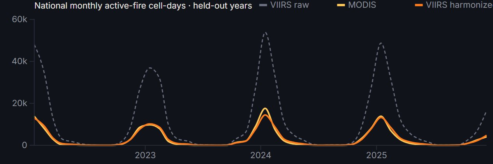
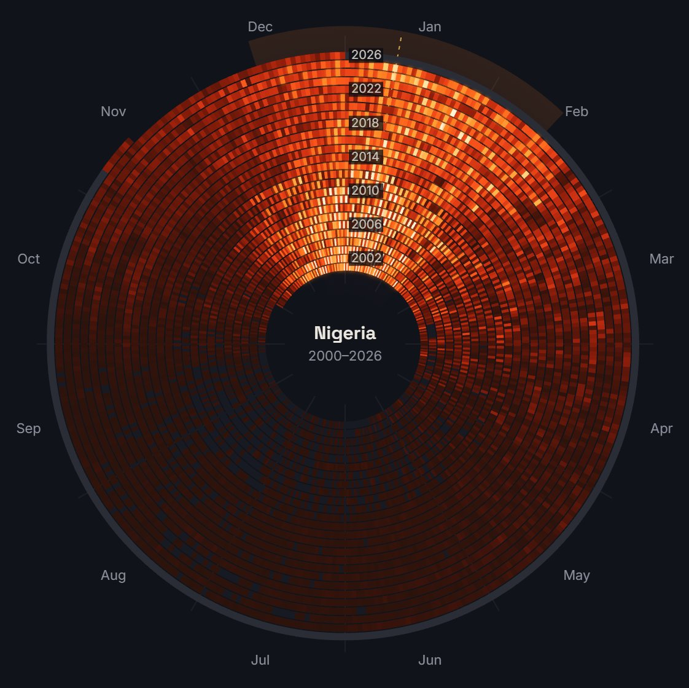
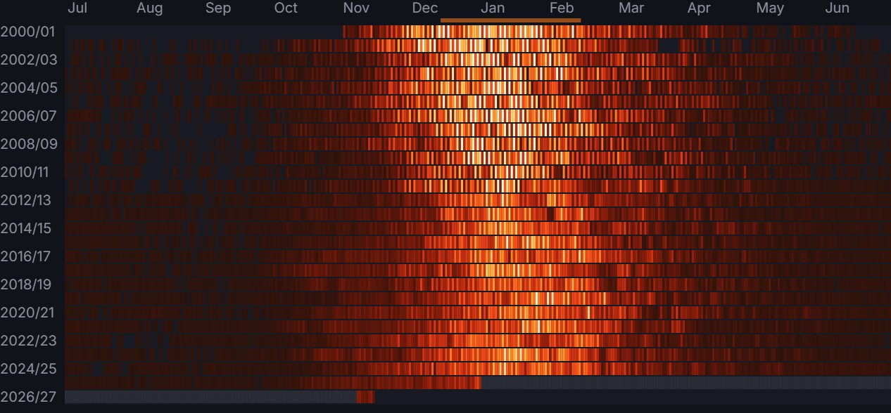
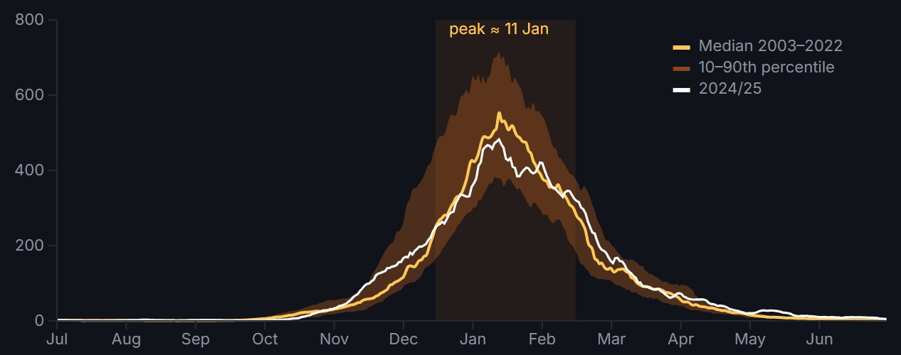
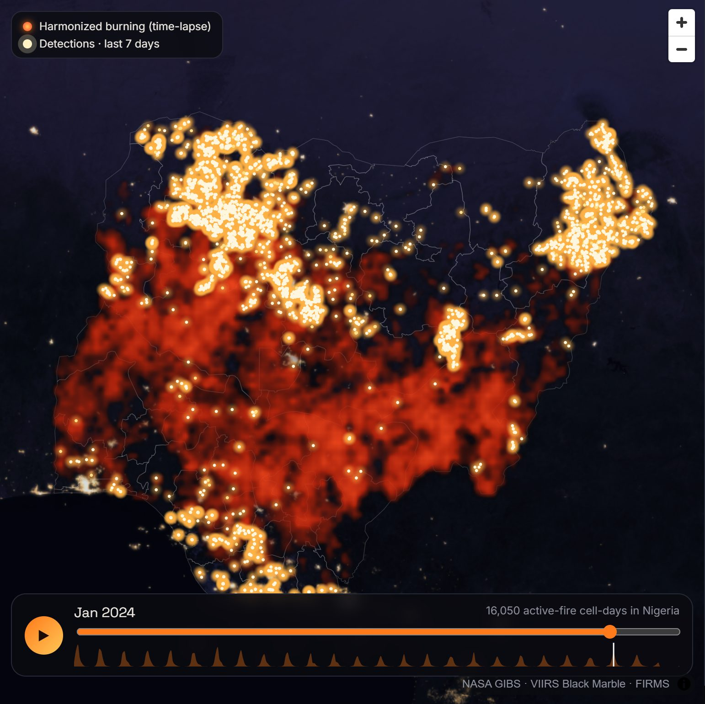

NASA Space Apps Challenge 2026 · Lagos, Nigeria
When does Nigeria burn? 25 years of satellite fire records, turned into one easy calendar.
The problem
Every dry season, bush and farm fires spread across Nigeria. They burn crops, homes and forests and fill the air with smoke.
Satellites have watched these fires from space since 2000. In 2012 a newer satellite with sharper eyes joined, and it counts about 5 times more fire spots.
It's like switching to a new bathroom scale that reads heavier. You can no longer tell whether you really gained weight. In the same way, nobody could tell whether fires are really getting worse.
Fire spots counted over Nigeria each year. Source: NASA FIRMS.
Our idea
We cut Nigeria into small squares (about 10 km). Each day, a square is simply "burning" or "not burning". One fire can no longer be counted 20 times.
Both satellites flew together for 10 years (2012–2021). In that time, the new one marked about 4 burning squares for every 1 the old one marked.
We scale the new satellite down to match. Then we test it on 2022–2025, years we kept hidden, like testing a student on questions they never practised.

What you get

The fire clock: each ring is one year, from 2000 in the centre to today on the outside. January is at the top.
Bright means lots of fire. The bright band near the top is the dry season, and it returns every year, like clockwork.

The calendar view: one row per year, one column per day.
When is the danger time?

Orange band = normal range from past years. White line = a chosen year. Shaded = danger window.
2 out of every 3 fires of the year happen in these 9 weeks.
Live status as of 14 Nov 2026. Also works for each of the 37 states, or any area you draw.
Who it helps

Know when and where to get ready, and get a simple "normal / extreme" alert each week.
Plan safer burning, firebreaks and awareness campaigns before each state's danger window.
A trustworthy 25-year record. It shows burning in Nigeria is down about 27% since the mid-2000s.
Built only from free, open NASA satellite data: 6.3 million fire detections.
Try it · What's next
Free · no login · works on phones
Code: github.com/LanZeroth/XORtil
Next steps
Thank you.
Team XORTil · Abdullah Shittu · Data: NASA FIRMS (MODIS & VIIRS), NASA GIBS